Balanced Diet
F

Card text
Discard your hand and draw out of the discard pile for the rest of when this friend is in the land of the living.
Transcribed · ready for your review
44 identifiable cards from 2 photographs. Original cards, extracted illustrations, and readable card text side by side.
Discard your hand and draw out of the discard pile for the rest of when this friend is in the land of the living.
Force someone to sell their cards for a payment they will accept in the game.
Steal 2 cards from the discard pile.
Play without your thumbs or give your hand away.
Block a targeted card or steal 2 cards.
Make all other friends your friends.
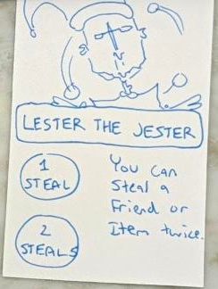
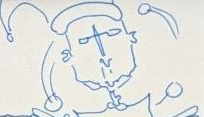
Download illustration · 204 × 1171 steal / 2 steals. You can steal a friend or item twice.
The top of the illustration is cut off in the original photograph.
If you have over 4 cards in your hand, put your hand shuffled into the draw pile. Draw 5 cards.
Draw an additional card on your turn.
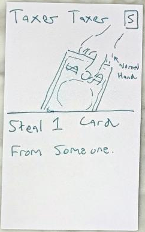
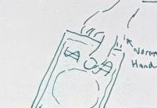
Download illustration · 201 × 138Steal 1 card from someone.
Title is uncertain: appears to read “Taxor Taxer.” The illustration includes a “Normal Hand” annotation.
Discard a card. Draw 4 cards.
Steal 2 cards from the draw pile.
Smile forever or discard a card.
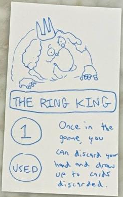
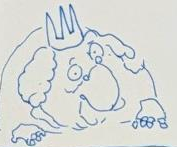
Download illustration · 177 × 1471 / used. Once in the game, you can discard your hand and draw up to cards discarded.
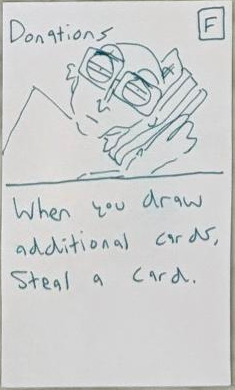
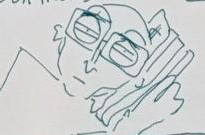
Download illustration · 205 × 135When you draw additional cards, steal a card.
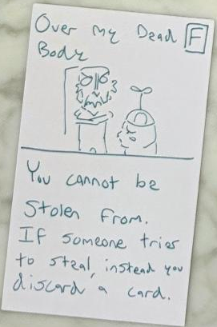
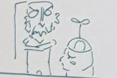
Download illustration · 171 × 115You cannot be stolen from. If someone tries to steal, instead you discard a card.
Force someone to do any possible action once.
The earlier title “Threats” is crossed out; the replacement title is “Suggestions.”
Force someone to discard a friend or item.
If someone makes you discard a card instead discard this friend and draw a card.
Look at an opponent’s hand. Steal a card from them.
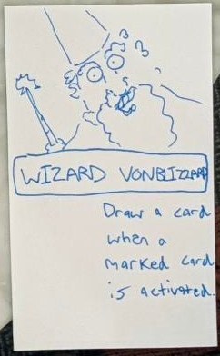
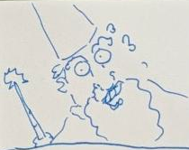
Download illustration · 210 × 166Draw a card when a marked card is activated.
Surname spelling is uncertain; transcribed as “Vonblizzard.”
3 / 2 / 1. After being forced to discard 3 times all opponents discard 3 cards.
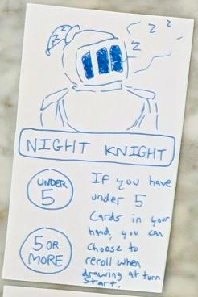
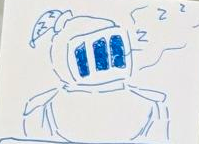
Download illustration · 199 × 144Under 5 / 5 or more. If you have under 5 cards in your hand, you can choose to reroll when drawing at turn start.
The handwritten word appears to be “reroll.” Preserved as written.
1 block / 2 blocks. Block 2 accusations of stealing. Replenish blocks when you discard all of your cards.
Counts as 2 cards when active.
Take a card from the draw pile & the discard pile.
Block an action.
Swap hands with someone.
Force someone to go down to 2 cards. You go down to 3 cards.
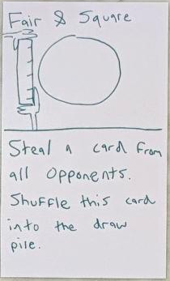
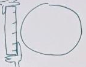
Download illustration · 143 × 111Steal a card from all opponents. Shuffle this card into the draw pile.
Draw cards up to a number people can agree on. Put this card back in your hand.
If you successfully give this card to someone, they discard 3/4 of their hand and this card.
Discard 2 cards in someone’s hand. You discard 1 card.
Force someone to discard a card. You draw a card.
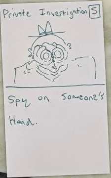
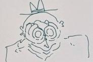
Download illustration · 184 × 122Spy on someone’s hand.
Title spelling normalized to “Private Investigation.”
Force someone to discard all friend cards in their hand.
Draw 3 cards.
Draw 4 cards. You cannot win this turn.
Draw up to cards discarded from another card.
Steal a card from both the draw & discard pile.
Look at the top 3 cards in the draw pile. Put one in your hand.
Steal 3 cards. Next turn, give one back.
Draw up to 4 cards when this is played. You must discard a card when you draw a card.
Take as many cards from anywhere as you can.
The right edge of the card and illustration is cut off in the original photograph.